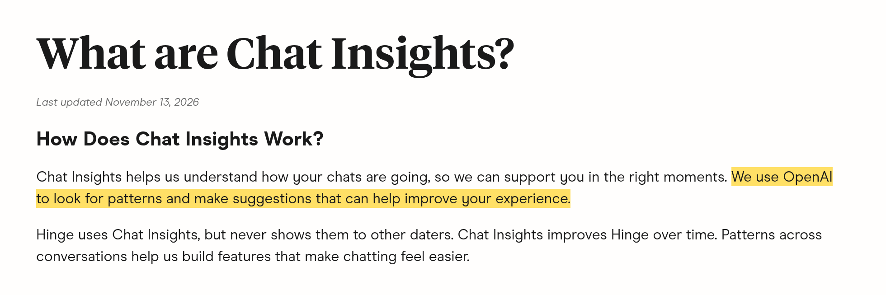

Hinge Help Center · new page “What are Chat Insights?” · created Nov 9, 2026
Hinge’s new Chat Insights runs your chats through OpenAI

Screenshot of help.hinge.co, Nov 14, 2026 (highlight added). Turn it off: photo icon › Settings › Chat Insights.